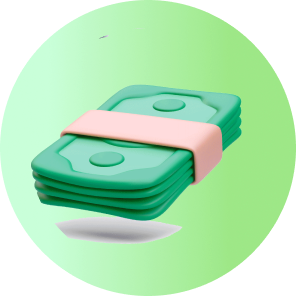

똑똑하게 미루면 연금액이 최대 36%까지 늘어난다. 지금 당장 받는 것보다
더 큰 내일을 설계하고 싶다면 '연기연금'의 5가지 핵심 키워드에서 그 해답을 찾을 수 있다.

연기연금
노령연금 수급자가 연금 받는 시기를 일정 기간 늦추는 대신, 이후 더 많은 연금액을 지급받는 제도다. 당장 생계 수단이 있거나 더 높은 연금액 수령을 원하는 수급자에게 유리하며, 국가가 보장하는 확정 가산율을 통해 노후 자산 가치를 높일 수 있는 전략적 선택지다. 즉 연기연금은 단순히 수급 시기를 미루는 제도가 아니라, 100세 시대에 발맞춰 나의 연금 자산을 효율적으로 증폭시킬 수 있는 ‘개인 맞춤형 연금 리모델링’이다.
늦게 받기(연기연금 주수혜자 지급하기 설명)
기다림이 만드는 자산의 가치
연금 받을 시기가 되었을 때 바로 수령하지 않고 시기를 미루는 것이다. 단순히 수령 시점을 늦추는 것에 그치지 않고, 수급자가 자신의 건강 상태와 소득 유무를 고려하여 능동적으로 연금 수령 시점을 결정하는 '노후 리모델링'의 시작점이 될 수 있다.
수령 전략
나만의 골든타임을 찾는 기술
개인의 상황에 맞춰 전체 연금액의 일부(50~90%)만 선택적으로 늦게 받는 ‘부분 연기’도 가능하다. 연기 중이라도 필요시 언제든 재지급 신청을 할 수 있으며, 5년 범위 내에서는 연기와 재지급을 유연하게 조정하며 본인에게 가장 유리한 수령 시점인 '골든타임'을 결정할 수 있다.
최대 5년
36% 증액을 향한 설계
연기 가능 기간은 최대 5년이다. 5년을 꽉 채워 연기할 경우 기존 연금액보다 36%나 더 많은 금액을 평생 받게 된다. 수급자의 상황에 따라 1년부터 5년까지 연 단위 또는 월 단위로 설정할 수 있어 맞춤형 노후 설계가 가능하다.
증가율
연 7.2%의 확정 가산율
연기를 신청하면 매월 0.6%씩 연금액이 가산되며, 1년이면 7.2%가 증액된다. 이는 2026년 기준 시중 금리(한국은행 기준금리 2.5%)를 상회하는 수준으로, 물가 상승률 반영과는 별개로 적용되는 확정 가산율이라는 점에서 안정적인 수익 구조를 가진다.
근로 병행
감액을 피하고 실익을 챙기는 법
은퇴 후 재취업이나 사업으로 소득이 발생하는 수급자에게 매우 유용하다. 월 소득이 일정 기준(2026년 기준 5,193,511원)을 초과할 경우 연금액이 감액될 수 있는데, 이때 연기연금을 활용하면 감액 없이 연금을 보존하고 향후 더 높은 금액으로 돌려받을 수 있다.
본인의 상황에 맞는 결정이 중요!
연기연금은 나에게 연금액을 늘릴 수 있는 유리한 제도가 될 수 있으나, 반드시 본인의 경제 상황과 건강 등을 종합적으로 고려하여 결정해야 한다.
3가지 체크 포인트
연기연금 신청으로 노령연금액이 증가할 경우, 연금소득세, 건강보험료 및 기초연금액 등에 영향을 줄 수 있다.